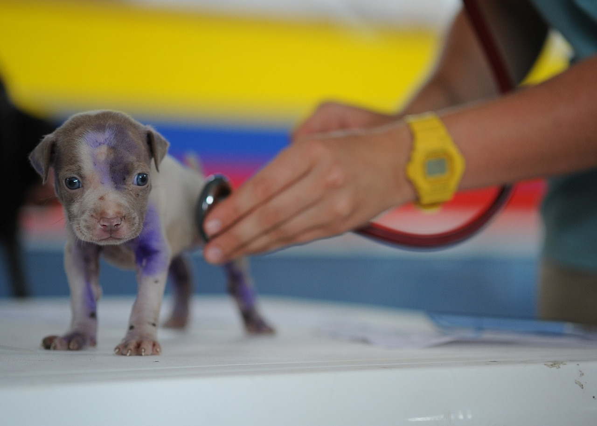

Rescate de Animales
En Adopet, entendemos la importancia de una respuesta rápida y coordinada para rescatar a los animales en situación de abandono. Nuestro servicio de rescate de animales permite a los usuarios reportar fácilmente casos de abandono a través de la aplicación.
Cuando un usuario reporta un animal en situación de calle, nuestra plataforma se encarga de conectar de inmediato con las fundaciones rescatistas cercanas. Estas fundaciones recibirán una notificación detallada que incluye información sobre la ubicación,
condición del animal y cualquier otro dato relevante proporcionado por el usuario. Este proceso asegura que los animales en necesidad reciban la atención y el cuidado que requieren de manera oportuna, maximizando las posibilidades de un rescate exitoso y efectivo.

Seguimiento
En Adopet, también ofrecemos un servicio de seguimiento para los animales rescatados. Después del rescate, la persona que reportó el animal puede consultar el estado y el progreso del animal a través de la aplicación. Las fundaciones rescatistas actualizarán
regularmente la información sobre la salud, el tratamiento recibido y el bienestar general del animal. Esto proporciona tranquilidad a los usuarios que se preocuparon por el animal y les permite seguir su recuperación y eventual disponibilidad para adopción.
Este servicio promueve la transparencia y el compromiso continuo con el bienestar de los animales rescatados.
Adopciones
El servicio de adopciones de Adopet está diseñado para facilitar la búsqueda de hogares permanentes para los animales rescatados. A través de nuestra plataforma, las fundaciones pueden publicar perfiles detallados de los animales disponibles para adopción.
Estos perfiles incluyen información esencial sobre el animal, como su edad, raza, características, historia y cualquier necesidad especial que pueda tener. Los usuarios interesados en adoptar pueden explorar estos perfiles, conocer más sobre los animales y
ponerse en contacto con las fundaciones para iniciar el proceso de adopción. Al proporcionar una interfaz fácil de usar y accesible, Adopet fomenta la adopción responsable y ayuda a conectar a los animales rescatados con familias amorosas y adecuadas.